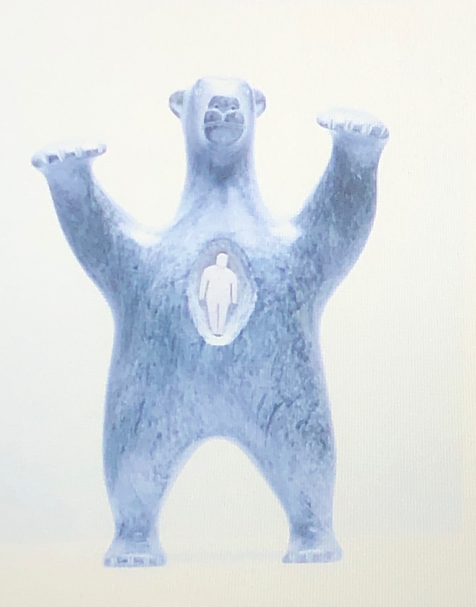

Where the blood mixes blog response #3
Indigenous artwork
Text
Métis leader Louis Riel once said: “My people will sleep for 100 years but when they awake, it will be the artists who give them back their spirit.I think that this saying is very true as art itself is whatever you make it out to be so you're free to express yourself in any way that you see fit. With this the artists that are awake can show those who have been sleeping the way of their true culture and the meaning behind their identities.
Spirit Bear Possessing a Man's Soul
By:David Ruben Piqtoukun 
In this sculpture we can see a big bear and at the very center is a human that seems to be trapped. I think the meaning behind this is that the bear used to be a normal human but after being hurt too many times he just shut himself off. Cutting off everything so he does not have to feel the hurt and has left an unsightly exterior as a result. This piece is significant because it shows what bottled up emotions, feelings or true identity can lead to which would be a mass of anger unable to tap back into their true selves.
The relationship between both “Where the blood mixes” and David Rubens piece is that they focus on concealed emotions. “But mooch there he had it pretty bad eh,” this one line of dialogue tells us that at some point in mooches life he was met with some sort of trauma, though it does not tell us whether he overcame it.” if it was really bad….But you gotta talk about it, though. That’s the thing, eh? You gotta talk about what happened” and Mooche response is “what The fuck you looking at” This response by itself tells us the reader that he has not confronted his pent-up emotions and is keeping them inside letting them fester. Just like the bear, he is keeping his true self inside so he can’t feel more hurt. He drinks with money that he steals from his girlfriend, and acts like everything is ok but when someone brings up his past he gets angry. Mooch is a real-life example of what can happen when you don’t let yourself move past hurt or betrayal.
Kevin’s Loring’s play shows people that might have had the same experience that they are not alone. The feeling of knowing you’re not alone is a powerful one that could give those in need a helping hand to get to where they need to be both spiritually and emotionally.